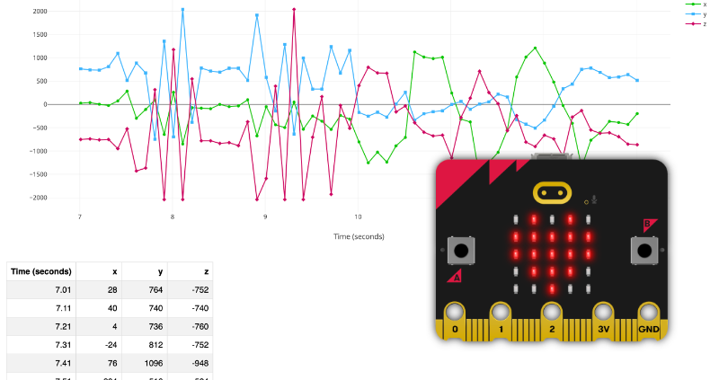

Student Exam Number:
Student Name:
My artefact is a working embedded system that is designed to monitor the environment conditions of a wildfire and simulate wildfire risk, which fulfills the requirements of the project brief. My artefact uses both analog and digital inputs to collect and process data in real time.
My embedded system uses a couple of analogue inputs that measure the temperature, windspeed, soil moisture and humidity. These are some of the things that influence wildfire risk, allowing my system to monitor it. I use a digital input switch in my system that allows for it to be started, paused, turned off and to stop data logging.
All the readings from my sensors will be stored into a CSV file for later analysis about the risk. This is particularly useful as it allows for immediate alerts or possibly future predictive modelling for wildfires. The data logging will allow me to test the system responses in different conditions or scenarios.
The system calculates wildfire risk using a combination of my sensor readings — temperature, humidity, soil moisture and wind speed.
My system uses a Python model to collect the sensor data for calculating wildfire risk from the CSV file gathered by my embedded system. My program reads the data in batches of 30 seconds and calculates the averages to determine fire risk in a more accurate way, then gives the tester a risk score and categorises it as safe, medium or very high risk.
To test how the system responds under changing conditions, I implemented two what-if situations in Python that used the collected sensor data from the CSV file. Option A increases temperature by 20% and decreases soil moisture by 25% to simulate hotter, drier conditions. Option B increases wind speed by 40% and temperature by 10% to simulate a high wind speed, hot environment.
For my adaptive system, certain combinations like high temperature and low humidity that push the wildfire risk above the high threshold will trigger a sound alarm and display a skull on the screen to signal that risk is high.

To get an understanding of the problem, I researched forest ecosystems and the factors that lead to wildfires. In my research, temperature, humidity, soil moisture and wind speed are often recognised as the variables that affect fire risk. Strong wind speeds can spread flames fast, low soil moisture, high temp and low humidity can dry out plants and vegetation which gives the fire perfect starting conditions. Nowadays, wildfires are often linked with countries like Australia and the United States due to the recent big wildfires over the last couple of years, however it is becoming a more serious concern here in Europe. In the last couple of years countries like Spain and Portugal have had some pretty serious wildfires, even Ireland has seen a rise in forest fires during spring and summer. Due to climate change these events are occurring more and more frequently as higher temperatures and less rain is becoming more common around us. While looking into existing systems, I learned about the Canadian Forest Fire Index which is known to be the most popular used one around the world. It most commonly uses 4 inputs similar to mine, temperature, humidity, wind speed and rainfall. To my knowledge they use these inputs to create a risk score. I found this helpful as it gave me a slight understanding of what sensors would be important to measure wildfire risk if I pursued this idea in my project. Additionally, I researched forest sensor networks that are now in operation in some regions of Europe. These devices use sensors positioned all over a forest to track ground conditions in real time. These systems monitor the environmental factors that cause fires in the first place rather than waiting for a fire to be visually detected. When readings become hazardous, they can initiate automatic alarms. This demonstrated to me that the concept of employing an embedded system to monitor and respond to sensor data was a genuine and useful strategy employed in the real world rather than merely a school project idea. Additionally, it reaffirmed to me that the four variables I had determined through my research were the appropriate ones to concentrate on.
The goal of my project was to design a system that could monitor the sensors linked with wild fires and use that data to check if the current conditions were dangerous or not in real time or by reading a file of data. To meet the basic and advanced requirements of the brief, I had to make sure I planned how I was gonna make my python model and embedded system accordingly before I started. For BR1, I planned out how I was gonna use both analogue and digital inputs. My analogue inputs are the temperature sensor, humidity, windspeed and soil moisture.The digital output is the buttons on the microbit. Button A starts logging and A+B stops logging. Button B reads the current readings in that exact moment on the old screen attached to my embedded system. For BR2, to match the brief I will have it so my embedded system collects and stores data by writing sensor readings to a csv file using python. Each second the embedded system is logging, the temperature, humidity, soil moisture and wind speed are being recorded. Then for BR3, the embedded system needs to simulate wildfire risk as a real world process. It calculates the risk score using a formula of the inputs given to the sensors. If the risk is high, an alarm sound will start playing and a skull face will appear on the microbit. If the conditions are safe a happy face shows instead. For AR1, I plan to use python and the serial and csv libraries to read the csv file exported from the microbit. Then using the readings it will calculate the risk over a period of time. For AR2, I will test two different what if scenarios. One where the temperature is slightly higher and the soil moisture is lower which is similar to a drought environment and the other where wind speed is higher and so is temperature. This is to simulate a windy hot environment. And for AR3 my system uses the risk formula from all the inputs I have, temperature, humidity, soil moisture and windspeed to trigger a response that will say if the risk is “MEDIUM RISK”, “VERY HIGH RISK”, or “SAFE”. This allows for the system to respond in different ways for different outcomes. At the start of my project I had considered and planned on building a canopy cover monitoring system instead. This was going to use the light sensor to check how much sunlight is able to pass through the canopy in the forest which can check if deforestation occurs or possibly seasonal changes. Although it seemed like an interesting project to do I also wasn't sure how I was gonna go about the what if scenarios as I feel there isn't much versatility and potential there. I ended up going with the wildfire risk system as for one I had a greater area of sensors to choose from which then I think would lead to more accurate results. Also I do see wildfires as a greater issue that needs more solutions as soon as possible which was part of the reason I felt more inclined to go towards that direction. Technology used : Microbit, temperature sensor, soil moisture sensor, humidity sensor, windspeed anemometer, oled display, agriculture microbit kit, thonny, microsoft makecode
Throughout this journey my project has gone through a couple of milestones. Starting out this was only connecting my sensors to the microbit and getting a reading to pop up correctly. Surprisingly this was harder than it sounds due to bugs in my python code or faulty equipment to accidentally setting sensors to the wrong pin. Another key milestone I had was successfully exporting a working CSV with correct column headers and true sensor values. This took me several attempts as my serial write was nested into an if loop that I did not see which led to getting only zeros. My final milestone I’d say was completing both python models and seeing the fire risk formula work properly using the collected data consistently again and again. To test my embedded system I had to manually adjust the sensor values by blowing hot air on it to try to raise the temperature readings. Same goes for the humidity sensor which I had to blow on to raise readings. Then for soil moisture I damped a paper towel to try to test if the sensor readings were changing. Lastly for wind speed I brought a fan to school to spin the anemometer. I also tested that the system correctly moved between the three risk states confirming the happy face appeared under safe conditions, the exclamation mark appeared under medium risk conditions, and the skull icon along with the buzzer alarm went off correctly when risk exceeded the limit. This allowed me to verify that the risk calculation and output logic were working as intended before moving on to data collection. The main problem I encountered during development was with my Python model. It took me a long time to notice but at some point I realised that the model was only calculating wildfire risk based on the last row in the CSV file, meaning the risk score was based on a single sensor reading rather than the overall pattern of data. This was not an accurate or reliable way to assess risk, if temperature shot up to 50 degrees for the first half of the readings then dropped for the rest, that would not be reflected in the fire risk. To fix this I decided to change the model to collect readings in batches of 30 and calculate the average value of each sensor across those 30 readings before calculating risk. Then every 30 seconds (1 reading a second) the model would let you know what the average risk was that previous 30 seconds This meant the risk score was based on a full 30 seconds of environmental data rather than just one moment, making it far more accurate and gives a better understanding of what happens in a time frame. If the csv file doesn't have 30 more readings for the model to read, it will just read the remainder of the readings and average those out. I have the python model split into two files, first the main risk model and second the what if scenarios. The main risk model opens up the BR2_rawData.csv file using python’s built in library “csv”. It then reads through the data line by line putting them into a list. Once 30 have been entered it finds the average of the temperature, humidity, wind speed and soil moisture across each time. Then the numbers get put into my risk function and get a score out of 100. A score over 76 will print a “VERY HIGH RISK” warning for the user to see. For my what if scenario it starts out by using the Pandas library to load and clean the same CSV file. It removes any blank or invalid rows using dropna() The user is then asked to choose between two scenarios either option A or option B. Option A simulates drought conditions by increasing each temperature reading by 20% and reducing each soil moisture reading by 25%. Option B simulates dangerous hot and windy conditions by increasing temperature by 10% and wind speed by 40%. Following in the footsteps of my main python model, this model will then read the first 30 lines and find the averages for each input then use the formula to calculate the fire risk using risk() function. This makes it very comparable to the main python model and they use the same risk formula. After this the model calculates the risk score to see where it falls and then places it into either the "SAFE", "MEDIUM RISK" or "VERY HIGH RISK".
Overall I’m happy how my project has turned out. The embedded system successfully collects using temperature, wind speed, humidity and soil moisture sensors then calculates a wildfire risk in real time, gives results on request through an oled screen, sounds an alarm when risk gets high in area, and a python model that allows me to collect data and find the average of what happened in 30 seconds which gave me a good grasp of the risk. I would say that the main limitation of my project was that the python model can only work with one csv file at a time. If you ran the model again to export a new csv it would be renamed to the same as the last one and get overwritten which means all previous gained data would be erased. This means that the model doesn't have much long term potential unless fixed. I think a good way to improve this project is to allow multiple saves of data files which are named efficiently tracking time of when it was done. A good way to deal with the storage problem I think is to connect it up to a cloud database for long term storage. This could allow for the system to be done automatically without human intervention and allow the model to gather lots of useful information. The more information a model has the better it will become by just using its own data. .
| Meeting the Brief | 390 |
| Investigation | 360 |
| Plan and Design | 552 |
| Create | 754 |
| Evaluation | 242 |
| Total | 2298 |